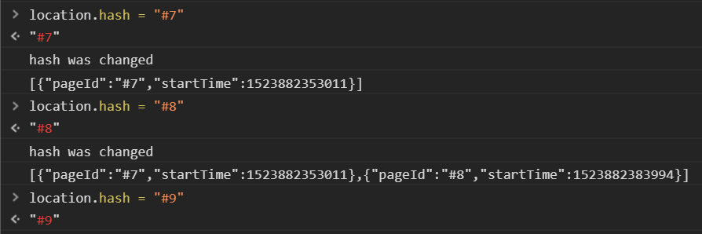
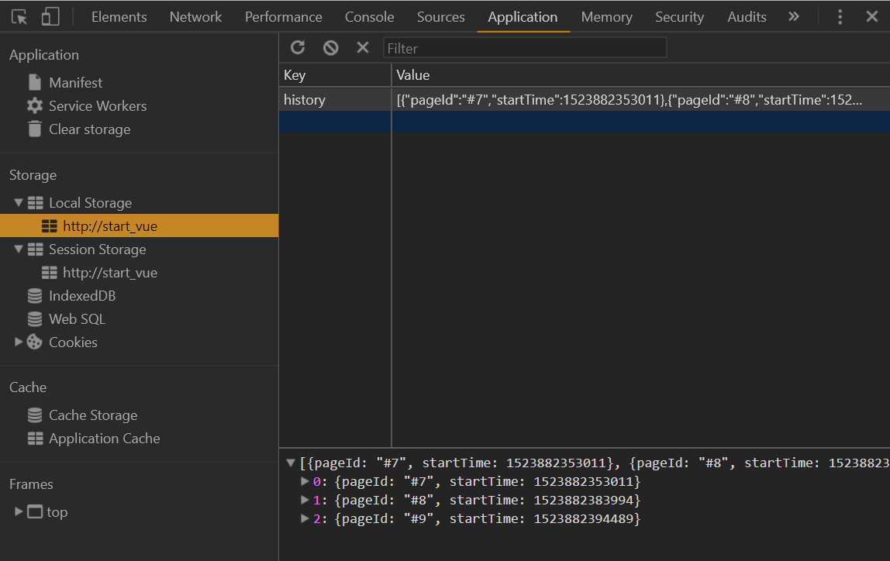

Захостить на гитхабе приложение, которое:
localStorage
Объявить функцию, которая будет вызываться в момент изменения хэш-части адреса страницы и сохранять в localStorage клиента hash-часть адреса страницы как pageId и время входа (в секундах) как startTime
Назначить эту функцию обработчиком события hashchange объекта window
Желательно, чтобы при изменении хеш-части адреса происходило обновление контента страницы без перезагрузки ( например, изменялся заголовок и картинка, чтобы создать иллюзию перехода на новую страницу )
Отслеживать в панели разработчика изменения в localStorage
После загрузки страницы меняйте хеш-часть адреса на 0, 1, 2, 3
и наблюдайте изменения на странице и в localStorage
Рулетка
На время показа картинок кнопку лучше прятать